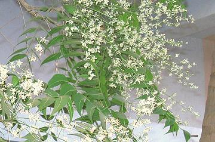
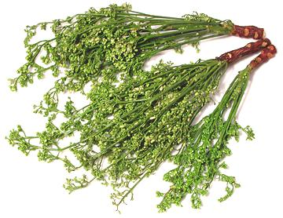

Neem

[Indian Lilac; Sadao, Sdao (Thai); Kadao (Laos); Vepa, Vepa Pootha
{flowers} (India - Dravidian); Vempu (Tamil); Neem (Bengali);
Mwarobaini (Swahili); Azadirachta indica]
This fast growing tree ranges from Persia through Southeast Asia,
parts of Africa and has been introduced to other parts of the world.
In India and mainland Southeast Asia young shoots and flowers are eaten as a
vegetable, though they are somewhat bitter, and are used in pickles. Throughout
its range Neem is known as a most powerful medicinal plant, also as an insect
repellant. All parts of the tree are used, and oil from the seeds is used
in cosmetics.
Photo by Gpics distributed under license
Creative Commons
Attribution-ShareAlike v2.5 Generic.
More on Mahogany

Buying & Storing:
I've found this in
the freezer cases of one Asian market in Los Angeles (Alhambra - Hawaii
Supermarket). It is best kept frozen until used. The photo to the left
shows these shoots with flower buds after thawing. Of course you would
not attempt to eat the stick the shoots sprout from. These were
harvested in Thailand and labeled "Frozen Sadao".
Cooking:
Shoots of this sort are cooked as a vegetable,
but due to their significant bitterness they are not liked by all. One
strategy used is to cook them with Tamarind
to provide sweetness and tartness.
mh_neemz ll0122 - www.clovegarden.com
©Andrew Grygus - info@clovegarden.com - Linking to and
non-commercial use of this page permitted